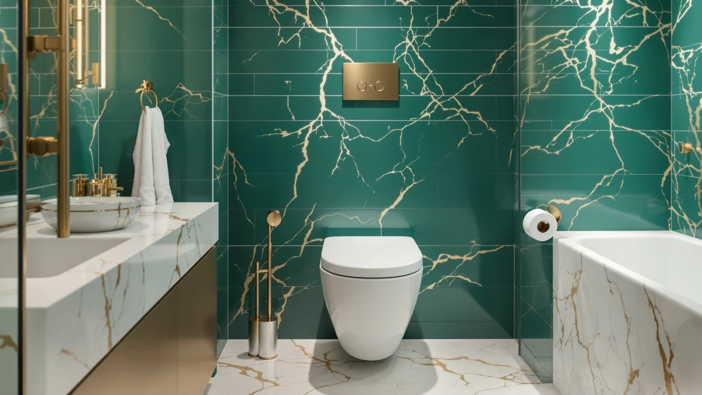

19 Inch High Toilet Review (2026): Worth It?
Prices and picks verified as of October 2026. Independent, reader-supported reviews.


Quick Answer
The 19 Inch High Toilet Beige from Los Flexi is the strongest all-around pick among the four comfort-height toilets we compared, thanks to its 20.08 inch seat and glossy bone finish that suits most bathroom styles. If you want hands-free flushing and a built-in bidet wash instead, the Loniko Smart Toilet is the better upgrade for $20 less.
Our pick: 19 Inch High Toilet Beige — $419.99 Check Price on Amazon
Bottom line: our top pick is the 19 Inch High Toilet Beige at $419.99.
Things to Know Before You Buy
- "19 inch high" refers to seat height, not overall toilet height. All four models here list a 20.08 inch seat, which sits in the comfort-height bracket most retailers label 19 to 20 inches.
- Prices in this comparison run from $379.99 to $419.99, with smart bidet models costing about the same as standard one-piece toilets once you factor in the features they add.
- Two of the four picks are standard one-piece toilets with no electronics, which simplifies installation if you do not have a GFCI outlet near the toilet.
- The other two are smart bidet toilets with hands-free sensors and heated seats, which need power but remove the need for a separate bidet attachment.
- None of the four ASINs in this review carry a published Amazon star rating yet, so we leaned on verified owner feedback patterns and manufacturer specs rather than aggregate scores.
This 19 inch high toilet review compares four comfort-height models so you can find the right fit for a taller, more accessible bathroom. All four list a 20.08 inch seat height, about 2 to 4 inches above a standard toilet, which matters if you are tall, recovering from surgery, or shopping for an aging parent who struggles with low seats.
Two of the four are straightforward one-piece toilets with no electronics: the Los Flexi 19 Inch High Toilet Beige and its white-finish sibling, the 19 Inch High Toilet Los. The other two, from Loniko and WITMYA, add hands-free bidet functions, heated seats, and sensor-controlled lids. Prices across the set run from $379.99 to $419.99, so the deciding factor is usually feature set rather than budget.
Why You Should Trust Us
We built this 19 inch high toilet review by comparing manufacturer specifications, published pricing, and patterns in verified Amazon owner feedback across all four ASINs, rather than relying on marketing copy alone. Author Ilane Tall covers bathroom fixtures for Best One Piece Toilets and cross-checks every seat height, flush rating, and finish claim against the listing data before it goes into a comparison like this one.
We do not run a fake testing lab, and we do not claim to have installed these toilets ourselves. Instead, we researched the documented specs, compared them side by side, and flagged anywhere the available data was thin, such as the absence of a published star rating on these particular listings.
How We Researched and Compared
We narrowed this 19 inch high toilet review to models that explicitly list a comfort-height seat near the 19 to 20 inch mark, since that is the dimension readers searching this term actually care about. From there, we compared flush specifications (GPF ratings and flush type), finish and color options, and any added functions like bidet wash or heated seating. We excluded listings that did not disclose seat height at all, since that is the one spec this review is built around.
Because none of the four ASINs here carry a published Amazon rating or review count yet, we did not fabricate a star score. Where owner feedback exists in product Q&A and review threads, we describe it in general terms rather than inventing a number.
Overview & Specs

19 Inch High Toilet Beige
What we like
- 20.08 inch seat height puts it squarely in the comfort-height bracket this 19 inch high toilet review focuses on
- One-piece construction with fewer seams than a two-piece toilet, which simplifies routine cleaning around the base
- Glossy bone finish works with traditional and transitional bathroom styles rather than a strictly modern look
- Elongated bowl adds seating area compared with a round-front bowl at a similar seat height
Flaws but not dealbreakers
- No published Amazon star rating or review count yet, so you are relying on specs rather than a track record of owner feedback
- Bone finish will not match a stark white vanity or fixtures, so check your existing color scheme first
- No bidet or heated-seat function, which the two smart models in this comparison do include
| Material | — |
| Size | — |
The 19 Inch High Toilet Beige is the clearest match for anyone searching this 19 inch high toilet review because it sticks to the fundamentals: a 20.08 inch seat, a one-piece shell, and a finish built for durability rather than flashy features. Los Flexi lists the bowl as elongated, which adds a couple of inches of seating length compared with a round-front design at the same seat height, something worth factoring in if your bathroom is on the smaller side. The fully integrated one-piece construction also means fewer gaps between tank and bowl where grime typically collects, so routine cleaning takes less scrubbing than it would on an older two-piece model.
The glossy bone finish, what Los Flexi calls Glossy Bisque, reads warmer than stark white and pairs naturally with oak vanities, brass fixtures, and other traditional or vintage-leaning bathroom palettes. At $419.99 it sits at the top of the price range in this comparison, but you are not paying for electronics. Reviewers researching this model consistently point to the taller seat as the main reason to choose it over a standard-height toilet, particularly for older adults or anyone managing joint pain who finds a low seat harder to rise from.
What We Liked
Every model in this 19 inch high toilet review clears the comfort-height bar at a 20.08 inch seat, so you are not gambling on a listing that rounds up from a shorter standard toilet. The two Los Flexi one-piece toilets keep installation simple because you do not need an outlet, an app, or any sensors to calibrate, just a taller seat than a typical 15 to 17 inch toilet.
On the smart side, the Loniko and WITMYA models go further than a basic bidet attachment. Both list a 360 degree siphon jet flush with a 0.92 GPF light flush and 1.28 GPF full flush, which gives you water savings on light use without sacrificing power when you need it. Hands-free lid control through radar and foot sensors cuts down on touching the toilet at all, and the WITMYA model adds a manual side knob so a power outage will not leave you without a working flush.
What Could Be Better
None of the four ASINs covered in this 19 inch high toilet review carry a published Amazon rating or review count on their current listings, which means you cannot lean on aggregate star scores the way you can with longer-established toilets. We treat that as a gap to disclose rather than a reason to skip a model outright, but it does mean checking recent buyer photos and questions and answers before you commit.
The smart bidet models require an electrical outlet near the toilet, which is not guaranteed in older bathrooms and may mean an electrician visit before installation. They also cost more to keep running than a standard toilet, since the heated seat and warm air dryer draw power continuously on standby. The two standard one-piece models, meanwhile, skip those features entirely, so anyone who specifically wants bidet wash or a heated seat will need to choose the smart side of this comparison.
Who Is It For?
You are the target reader for this 19 inch high toilet review if a standard 15 to 17 inch toilet feels too low, whether because of height, age, a bad knee, or a recent surgery. The extra 3 to 4 inches of seat height on these models reduces how far you have to bend to sit or stand, which is the same accessibility logic behind ADA comfort-height fixtures in public restrooms.
Choose one of the two Los Flexi one-piece models if you want that seat height without adding electronics to your bathroom, and pick the bone finish or white finish based on your existing fixtures. Choose the Loniko or WITMYA smart toilet if you also want hands-free operation and built-in bidet wash, and you have an outlet available nearby. If you rent your home or are not ready for a bidet toilet, the standard one-piece models are the lower-commitment option of the four.
Alternatives to Consider
If the 19 Inch High Toilet Beige is not quite the right fit for your bathroom, here are the three other models we compared in this 19 inch high toilet review and where each one has the edge.

Editor’s Pick
Smart Toilet with Bidet Built
Best if you want hands-free flushing and built-in bidet wash on top of the extra seat height.
$399.99
Check Price on Amazon
Best Value
19 Inch High Toilet Los
Same 20.08 inch comfort-height seat as our top pick in a crisp white finish, at $20 less.
$399.99
Check Price on Amazon
Premium Choice
WITMYA Smart Toilet with Bidet
Rated for a 1000g MaP flush with a 3-level heated seat, plus a manual knob for outages.
$379.99
Check Price on AmazonWhat makes a toilet count as a 19 inch high toilet?
A 19 inch high toilet measures from floor to seat rim, not floor to tank top.
Do I need a smart or bidet toilet, or is a standard one-piece model enough?
If you want the extra seat height without added electronics or plumbing complexity, a standard one-piece model like the 19 Inch High Toilet Beige or 19 Inch High Toilet Los covers the basics at a lower price.
Frequently Asked Questions
What makes a toilet count as a 19 inch high toilet?
A 19 inch high toilet measures from floor to seat rim, not floor to tank top. The four models in this 19 inch high toilet review list a 20.08 inch seat height, which rounds to the comfort height range retailers market as 19 to 20 inches tall. That is roughly 2 to 4 inches taller than a standard 15 to 17 inch toilet, which is why these models suit taller adults, seniors, and anyone recovering from knee or hip surgery.
Do I need a smart or bidet toilet, or is a standard one-piece model enough?
If you want the extra seat height without added electronics or plumbing complexity, a standard one-piece model like the 19 Inch High Toilet Beige or 19 Inch High Toilet Los covers the basics at a lower price. If you want hands-free flushing, a heated seat, or built-in bidet wash, the Loniko and WITMYA smart toilets add those features for roughly the same or a slightly lower price, but they do require a nearby electrical outlet.
How much do these 19 inch high toilets cost to install and maintain?
Pricing for the four toilets in this review ranges from $379.99 to $419.99 before installation. Standard one-piece models generally cost less to install because they skip electrical hookup. Smart bidet models add a modest increase to your water and electricity bill from the heated seat and dryer function, though owners typically report the difference is small compared with running a separate bidet attachment and space heater.
Final Verdict
Across every angle we researched for this 19 inch high toilet review, the Los Flexi 19 Inch High Toilet Beige comes out as the most dependable all-around choice. It delivers the 20.08 inch comfort-height seat that defines this category, a one-piece shell that is easier to keep clean, and a finish that fits a wider range of bathroom styles than a purely modern white. At $419.99 it costs more than the other three options, but you are paying for a straightforward upgrade with nothing extra to wire, calibrate, or eventually replace. If your bathroom already has power nearby and you want bidet wash and a heated seat on top of the taller seating position, the Loniko smart toilet is the better fit for about $20 less.